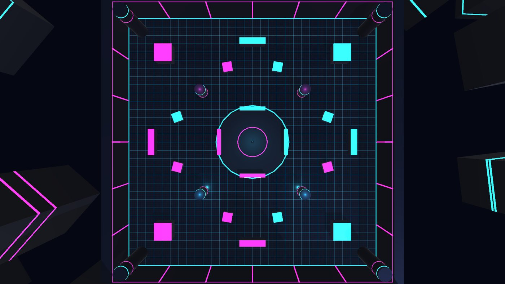
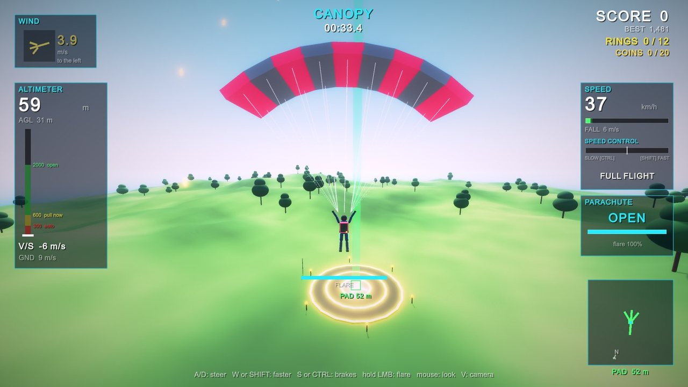

NEON BREACH contains no imported 3D models, textures or audio files. A search of the Assets folder finds no FBX, OBJ, Blend, WAV, MP3 or OGG files. All visual and audio content is generated by C# code, either at runtime when a mode starts or by editor builders that run the same code and save the result as Unity assets ([[t-assets]]). This approach has four benefits for an XR project: no licensing questions, a small repository, worlds that can be rebuilt or swapped at runtime (which MR mode needs) and complete control over polygon counts.
| Asset type | Count | Produced by |
|---|---|---|
| C# scripts | 129 | Hand-written source (33,412 lines, 28 Nov 2026) |
| Shaders | 5 | Hand-written: NB_PostFX, NB_Vignette, RatToon, RatSky, RatFX |
| Materials (.mat) | 149 | Saved by builders from the cached generators (Mats, RatMats, FarmMats): 17 shared, 78 Rat Shooter, 54 Farm Sniper |
| Textures (.png) | 51 | Drawn into Texture2D by ProcTex, CartoonTex and FarmTextures and saved by the builders (neon grid, ground, bark, crops, labels, UI icons); the intro's 12 textures (IntroArt) are generated at start-up and never saved |
| Mesh / NavMesh assets | 4 | RatMeshes.asset (19.8 MB) and FarmMeshes.asset (5.1 MB) hold generated meshes; two baked NavMeshes for mice and rats |
| Prefabs | 6 | Five cartoon-mouse variants and the cartoon rifle, saved by RatShooterSceneBuilder |
| Scenes | 3 | Built and saved by SceneBuilder, FarmSceneBuilder and RatShooterSceneBuilder |
| Sounds and music | – | Synthesised into AudioClips at start-up by AudioSynth, RatSynth, FarmAudioSynth and IntroAudio (gunshots, explosions, footsteps, wind, birds, music loops, the intro's score and theatre ambience) |
The two shooter arenas are built by WorldBuilder and ArenaManager from primitives with emissive neon trims. Neon Grid is an open square arena with a central raised platform, pillars, crates of varying height as cover, corner towers and a city skyline beyond the walls. Foundry is a long industrial hall with a raised platform, ramps, lanes and furnaces. The layout gives every enemy type a role: pillars break the sniper's line of sight, crates force gunners to flank, and the platform rewards high ground. All cover geometry is on the Environment layer, so the runtime NavMesh is built from it automatically.

All characters are built from primitives in code. The humanoid enemies (grunt, gunner, sniper, shield tank and the boss) are boxes with a sphere head, a glowing visor and an emissive chest panel in a colour per type; the drone is a flying sphere with a glowing eye, ring, pods and fin; the tank carries a translucent energy shield. The skydiver (SkydiverRig) adds limbs, a jumpsuit and a canopy; the five cartoon mice are rounded lathes, tubes and boxes with whiskers, ears and a 12-segment tail; the farm rats are low-poly and the farmer wears a hat and a flannel shirt. Their animation is procedural (Section 7.9).


| Weapon | Damage | Rate (/s) | Magazine | Reload (s) | Spread hip / ADS (°) | Range (m) | Notes |
|---|---|---|---|---|---|---|---|
| VX-9 Pulse Pistol | 26 | 5.5 | 12 | 1.15 | 1.2 / 0.15 | 140 | Semi-automatic |
| AR-77 Plasma Rifle | 16 | 11 | 30 | 1.9 | 2.6 / 0.45 | 160 | Fully automatic |
| SG-12 Scatter Cannon | 11 × 9 | 1.3 | 6 | 0.45 / shell | 5.2 / 3.4 | 45 | 9 pellets, shell-by-shell reload |
The bow (archery) has a string that bends with the draw amount and a nocked arrow. The Rat Shooter's cartoon rifle has gloved hands, flannel sleeves, an animated magazine and bolt, and ejects casings. The Farm Sniper's bolt-action rifle has a working scope; in VR it renders the magnified view to a render texture on the scope lens.
A covered booth faces a lane with nine targets: four static targets at 10, 20, 30 and 40 m, three pop-up targets at 15, 25 and 35 m, and two rail targets at 23 m (2.4 m/s) and 37 m (3.2 m/s). Target face radii grow with distance (0.50–1.00 m). Distance signs, glowing lane lines and wind flags that show the current wind complete the range ([[f-range]]).


The island is a 200 × 200 height-field mesh covering 2.8 × 2.8 km. Its height function combines a fractal Brownian-motion noise, a radial island mask with an angular wobble, and a Gaussian mountain:
A colour map shades beach, grass, rock and snow by height and slope. Then 230 trees are placed in noise-masked forests ("forests, not a carpet"), a 15 m landing pad with a light beacon, 12 rings, coins, drifting balloons and bird flocks are added, together with an ocean plane, clouds and a 32 × 16 segment sky dome. Fog and the sky gradient change with altitude ([[f-island]]).



RatWorldBuilder generates a sunny cartoon farmyard around the porch the player shoots from: rolling hills, a fenced yard with a dirt path, a red barn, a silo, a windpump, trees, a vegetable garden with a scarecrow, corn and pumpkin patches, hay bales, barrels, crates, a trough, a wheelbarrow, sacks, a log pile, a well, bushes, rocks, sunflowers, mouse burrows and bait food. Grass and flowers are grown at load by GrassPlanter, and clouds and butterflies drift through the scene ([[f-ratyard]]).
FarmWorldBuilder creates rolling terrain with a pond, corn, wheat, cabbage and pumpkin fields, a vegetable garden, a farmhouse, a barn, a silo, a watchtower, a chicken coop, a well, a windmill, fences, trees, an orchard, hay bales, a tractor and power poles. Crops and grass are grown from a seed when the scene loads (VegetationPlanter) rather than being saved, which keeps the scene file small ([[f-farm]]).


The startup intro (Chapter 8) is built from the same kind of procedural assets. IntroArt draws twelve textures at start-up: a velvet curtain cloth (1024×256 with mip-maps) whose folds are a warped sum of sines, shaded with ambient occlusion in the valleys and a velvet sheen on the turning flanks (proportional to (1 − facing)1.7), with a neon piping strip baked into the last 5 % of the texture; a tiling valance with scalloped swags and a glowing edge; a perspective neon floor grid whose lines are antialiased by their projected pixel distance; a volumetric spotlight cone; soft glows; a vignette; and film grain. Each curtain is not a picture but a deformable cloth mesh (IntroCurtain, 43×15 vertices): the outer edge stays on the track while the leading edge travels, so the folds bunch up as the curtain opens, and stage lighting (a centre spotlight and magenta footlights) is computed per vertex from the screen position, so the folds move through the light. The neon piping keeps a fixed width however much the cloth is compressed ([[f-intro-stage]] in Chapter 8).
Mats). One material per name, created once and cached, using Unity's Standard shader. Neon materials are emissive (cyan, magenta, red, green, orange, white). Every generated material has enableInstancing = true, and the editor script RenderingSettingsGuard keeps instancing on for all saved materials.ProcTex). The neon floor grid, target faces, the island colour map, vignette masks and UI icons are drawn pixel by pixel into Texture2D.RatShooter/Toon shader. A Built-in pipeline toon shader with a soft lighting ramp (softness and offset parameters), a tinted shadow colour, a crisp highlight, rim lighting, vertex colours used as macro colour and ambient occlusion, real sun shadows, and an optional vertex wind sway for grass, corn and flowers. RatSky draws a gradient sky; RatFX is an unlit effects shader.NB_Vignette. The comfort vignette, drawn on a quad in front of the camera so that it appears in both eyes.NB_PostFX)Because the project uses the Built-in Render Pipeline, it cannot use URP's post-processing volumes. PostFX instead runs a four-pass shader in OnRenderImage: (0) a bloom prefilter with a soft-knee threshold and a 2× downsample, (1) further downsampling into a mip chain, (2) additive tent upsampling, and (3) a composite pass that applies chromatic aberration (only while damaged), adds the bloom, applies exposure, a highlight-only soft clip, contrast, saturation around Rec. 709 luma, lift/gain split-tone grading, a gameplay tint (cold for slow motion, warm for double damage) and a vignette. The soft clip leaves dark and mid tones unchanged and rolls highlights off smoothly:
The arenas are lit by a directional key light with soft shadows, coloured point lights at the neon features, and the emissive neon materials themselves, which bloom in post-processing. The parachute world uses a bright sun with altitude-dependent fog. The Rat Shooter uses realtime lighting only (no baking) with warm grading. The Farm Sniper sets a 150 m shadow distance with 4 cascades so that distant rats still receive shadows through the scope. In MR mode the arena's directional light keeps lighting the enemies, with shadows switched off.
The project has no Animator controllers or animation clips. Every motion is computed in code each frame from game state: enemy gaits from their velocity; weapon recoil, sway, bob, the reload sequence and the ADS transition in the viewmodel; the bow's string bend from the draw amount; the skydiver's limbs from body position and speed control; the canopy's inflation from the deploy progress; and the mice's legs, tail, ears, eyes and poses in MouseRig. Procedural animation keeps animations consistent with physics (a faster mouse scurries faster) and avoids asset files.
Effects are generated in code: muzzle flashes with a 45 ms point light and per-weapon tracers; impact particles and decals aligned to the surface normal (the Rat Shooter varies them across eight surface types); grenade blasts with a light flash and debris; the tank shield's flash and the sniper's 1.4 s laser telegraph; cartoon poofs, X-eyes, dizzy stars and victory confetti; and screen effects – bloom, chromatic aberration on damage, slow-motion and double-damage tints, the VR comfort vignette and the snap-turn blink.
Procedural content is integrated into Unity in two ways. Content that must exist in the saved scene (the shooter arena, the Rat Shooter farmyard and the Farm Sniper farm) is produced by editor builders available under the Neon Breach menu. Each builder runs the generator, bakes the NavMesh, saves the meshes, textures and materials under the game's Generated/ folder and its prefabs under Prefabs/, writes the scene and registers it in Build Settings. Content that changes during play (the archery range, the parachute island, the MR room, enemies and effects) is generated at runtime when a mode starts and destroyed by Teardown when it ends. ProjectBootstrap runs the main builder automatically the first time the project is opened.
Optimisations were made only when a measurement justified them, using the in-game F4 performance panel, which reads Unity's profiler counters (draw calls, SetPass calls, batches, shadow casters, triangles, main-thread time) through ProfilerRecorder. [[t-opt]] lists the changes that were measured with the same camera pose at Ultra quality during development; [[t-render-stats]] gives the statistics measured on 22 Nov 2026 for this report.
| Change | Scene | Metric | Before | After | Decision |
|---|---|---|---|---|---|
| GPU instancing on all generated materials + no shadows from emissive neon parts | Shooter arena | Shadow casters | 277 | 95 | Kept (Mats, Perf.NeonNoShadows) |
| Shooter arena | Triangles | 16.7 k | 12.7 k | ||
| Archery range | Shadow casters | 441 | 214 | ||
| Archery range | Draw calls | 772 | 691 | ||
| Runtime static batching | Shooter arena | Draw calls | 321 | 453 | Rejected: batched meshes lose instancing and are still drawn once per light (Perf.BatchingEnabled = false) |
| Archery range | Draw calls | 691 | 812 | ||
| Dynamic batching | Arena / parachute | Dynamic batches | 0 | – | Disabled: it produced no batches, while instancing produced 165 instanced batches (652 draws) in the arena |
Other measures already in the code: a pool of 32 audio sources, one cached material and texture per name, a NavMesh built only from colliders on the Environment layer, an IMGUI HUD with no canvases to rebuild, stripping of colliders from decorative primitives (Util.Part) and noise masks that keep vegetation density bounded.
| Scene / mode | Draw calls | SetPass | Instanced batches (draws) | Shadow casters | Triangles |
|---|---|---|---|---|---|
| Shooter – Neon Grid (combat) | 319 | 307 | 87 (279) | 95 | 12.7 k |
| Shooter – Foundry | 400 | 394 | 107 (386) | 160 | 11.2 k |
| Archery range | 701 | 684 | 168 (654) | 214 | 25.1 k |
| Parachute (in the plane) | 266 | 248 | 49 (112) | 0 | 207.4 k |
| Rat Shooter (level 1) | 999 | 369 | 823 (1,153) | 543 | 1.38 M |
| Farm Sniper (mission) | 932 | 330 | 857 (2,099) | 751 | 2.27 M |
The shooter arena's figures (95 shadow casters, 12.7 k triangles) reproduce the optimised values exactly. The two cartoon games draw far more triangles because their rounded meshes and planted grass are much denser, but GPU instancing keeps their SetPass calls in the same range as the arenas. Frame times are reported in Chapter 12.